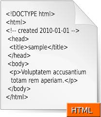
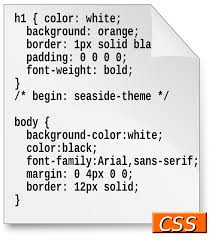
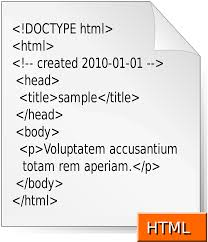
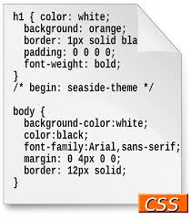

What is this page
The purpose of this page is to tell why I have created a webpage and what I have learned in the process of creating the webpage in my Stem class. The reason I have created this page is because it was given to me as an assignment. The assignment is to create a home page, a page about myself, and a page about a topic of my choice. There is a lot that goes into creating a webpage. It all began with learning the basic layout of an html. Then we began learning more and more tags for html until we were ready to transition to styling the webpage. In order to style a page you have to use CSS(Cascading style sheets) and use one of three methods which are inline, embedded, or internal to style a page. Then we began to learn how to style a page anywhere from changing the font to creating tables or boxes for a page. Needless to say the I have learned enough to style a page just based off of this page. Based off of the information I have obtained in this class, I hope I can apply this newly learned skill set in the future.
 


